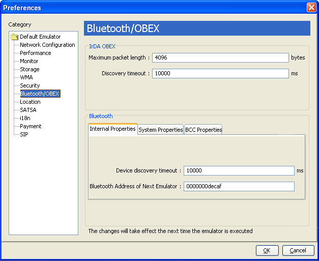

| Sun Java Wireless Toolkit for CLDC User's Guide |
| Sun Java Wireless Toolkit for CLDC User's Guide |
| C H A P T E R 11 |
|
Using the Bluetooth and OBEX APIs |
The Sun JavaTM Wireless Toolkit for CLDC emulator supports JSR 82, the Java APIs for Bluetooth. The emulator is fully compliant with version 1.1 of the specification, which describes integration with the push registry. JSR 82 includes two independent APIs:
This chapter describes how the Sun JavaTM Wireless Toolkit for CLDC implements the Bluetooth and OBEX APIs.
The Sun JavaTM Wireless Toolkit for CLDC emulator enables you to develop and test application that use Bluetooth without having actual Bluetooth hardware. The toolkit simulates a Bluetooth environment for running emulators. Multiple emulator instances can discover each other and exchange data using the Bluetooth API.
For an example, see the documentation of BluetoothDemo in Appendix A.
The Sun JavaTM Wireless Toolkit for CLDC implements OBEX transfer over simulated Bluetooth and infrared connections. The simulated infrared connection follows the IrDA standard (see http://www.irda.org/). Simulated infrared transfers can take place between multiple running emulators.
The Sun JavaTM Wireless Toolkit for CLDC enables you to configure the Bluetooth and OBEX simulation environment. Choose Edit > Preferences and select Bluetooth/OBEX to display the following window.
FIGURE 11-1 Bluetooth and OBEX Preferences

Devices using IrDA in the real world discover other devices by listening. You can configure how long the Sun JavaTM Wireless Toolkit for CLDC emulator waits to discover another device using the Discovery timeout field in the IrDA OBEX section of the preferences window. Enter a value in milliseconds.
At the API level, the discovery timeout value determines how long a call to Connector.open("irdaobex://discover...") blocks before it returns or throws an exception.
The maximum packet length affects how much data is sent in each packet between emulators. Shorter packet values result in more packets and more packet overhead.
In the Bluetooth section of the preferences window, the Device discovery timeout is the amount of time, in milliseconds, the emulator waits while attempting to locate other devices in the simulated Bluetooth environment.
Bluetooth Address of Next Emulator is the Bluetooth address to be assigned to the first emulator instance. Subsequent instances of the emulator receive an automatically generated address.
The System Properties tab in the Bluetooth section of the preferences contains properties that can be retrieved in an application using the getProperty() method in javax.bluetooth.LocalDevice.
The Bluetooth properties are fully described in the JSR 82 specification.
The Bluetooth Control Center (BCC) controls Bluetooth settings. Some devices might provide a GUI to customize Bluetooth settings. In the Sun JavaTM Wireless Toolkit for CLDC, the BCC is configured using the BCC Properties tab of the Bluetooth preferences. The properties are as follows.
| Sun Java Wireless Toolkit for CLDC User's Guide |
Copyright © 2007, Sun Microsystems, Inc. All Rights Reserved.